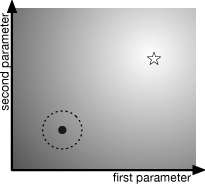

Downloads
Multi-Planar UNet
Download Multi-Planar UNet, a simple and thoroughly evaluated deep learning Python framework for segmentation of arbitrary medical image volumes. The system requires no task-specific information, no human interaction and is based on a fixed model topology and a fixed hyperparameter set, eliminating the process of model selection and its inherent tendency to cause method-level over-fitting. The system is available in open source and does not require deep learning expertise to use. Without task-specific modifications, the system performed better than or similar to highly specialized deep learning methods across 3 separate segmentation tasks. In addition, it ranked 5-th and 6-th in the first and second round of the 2018 Medical Segmentation Decathlon comprising another 10 tasks. The system relies on multi-planar data augmentation which facilitates the application of a single 2D architecture based on the familiar U-Net. Multi-planar training combines the parameter efficiency of a 2D fully convolutional neural network with a systematic train- and test-time augmentation scheme, which allows the 2D model to learn a representation of the 3D image volume that fosters generalization.Paper describing the package
U-Time
U-Time is a fully feed-forward deep learning approach to physiological time series segmentation developed for the analysis of sleep data. U-Time is a temporal fully convolutional network based on the U-Net architecture.It maps sequential inputs of arbitrary length to sequences of class labels on a freely chosen temporal scale. This is done by implicitly classifying every individual time-point of the input signal and aggregating these classifications over fixed intervals to form the final predictions.Download U-Time here.
Paper describing the package
woody
Download woody, a Python library for constructing very large random forests.Paper describing the package
bufferkdtree
![[bufferkdtree]](http://bufferkdtree.readthedocs.io/en/stable/_images/bufferkdtree.png) Download bufferkdtree
for blistering fast
nearest neighbor seach on GPUs.
Comes with a Python frontend.
Download bufferkdtree
for blistering fast
nearest neighbor seach on GPUs.
Comes with a Python frontend.
Paper describing the package
Shark
The Shark machine learning library is a modular C++ library for the design and optimization of adaptive systems.
![[Shark]](images/SharkLogo.png) The library provides methods for regression, classification, and density estimation, including various kinds of neural networks and kernel methods, as well as general algorithms for nonlinear optimization, in particular single- and multi-objective evolutionary algorithms and gradient-based methods.
The library provides methods for regression, classification, and density estimation, including various kinds of neural networks and kernel methods, as well as general algorithms for nonlinear optimization, in particular single- and multi-objective evolutionary algorithms and gradient-based methods.
The most recent version of Shark can be downloaded from here.
Video lecture
Tobias Glasmachers' 2008 NIPS open source software workshop video lecture on Shark.Paper describing the library
nnratio
Go to nnratio for a nearest neighbor density ratio estimator implemented in Python.Paper describing the package
Maximum Likelihood Model Selection for SVMs
Adapting the hyperparameters of support vector machines (SVMs) is a challenging model selection problem, especially when flexible kernels are to be adapted and data are scarce. We present a coherent framework for regularized model selection of 1-norm soft margin SVMs for binary classification. We propose to use gradient-ascent on a likelihood function of the hyperparameters. The likelihood function is based on logistic regression for robustly estimating the class conditional probabilities and can be computed efficiently. Overfitting is an important issue in SVM model selection and can be addressed in our framework by incorporating suitable prior distributions over the hyperparameters.Source code
Download example code for Shark version 2.Paper describing the algorithm
Training of Large-scale SVMs
![[feasible region of optimization problem]](images/jmlr05-215-fig4.jpg) Support vector machines are trained by solving constrained quadratic
optimization problems.
This is usually done with an iterative decomposition algorithm
operating on a small working set of variables in every iteration.
The training time strongly depends on the selection of these
variables. We propose the maximum-gain working set selection
algorithm for large scale quadratic programming. It is based on the
idea to greedily maximize the progress in each single iteration. The
algorithm takes second order information from cached kernel matrix
entries into account. We proved the convergence to an optimal
solution of a variant termed hybrid maximum-gain working set
selection. This method has been empirically compared to the prominent
most violating pair selection and the latest algorithm using second
order information. For large training sets our new selection scheme
is significantly faster.
Support vector machines are trained by solving constrained quadratic
optimization problems.
This is usually done with an iterative decomposition algorithm
operating on a small working set of variables in every iteration.
The training time strongly depends on the selection of these
variables. We propose the maximum-gain working set selection
algorithm for large scale quadratic programming. It is based on the
idea to greedily maximize the progress in each single iteration. The
algorithm takes second order information from cached kernel matrix
entries into account. We proved the convergence to an optimal
solution of a variant termed hybrid maximum-gain working set
selection. This method has been empirically compared to the prominent
most violating pair selection and the latest algorithm using second
order information. For large training sets our new selection scheme
is significantly faster.
Source code
Hybrid Maximum Gain working set selection algorithm implemented into LIBSVM 2.71. It is also implemented in the Shark machine learning library.Supplementary material
This program checks all 2,834,352 cases considered for the proof of Lemma 8. However, in the meantime Tobias Glasmachers found a much more elegant proof:
Paper describing the algorithm
Online and Active Learning for SVMs
Iterative learning algorithms that approximate the solution of support vector machines (SVMs) have two potential advantages. First, they allow for online and active learning. Second, for large datasets computing the exact SVM solution may be too time consuming and an efficient approximation can be preferable. The powerful LASVM proposed by A. Bordes, S. Ertekin, J. Weston, and L. Bottou iteratively approaches the exact SVM solution using sequential minimal optimization (SMO). It allows for efficient online and active learning. This algorithm can be considerably improved in speed and accuracy by replacing the working set selection in the SMO steps. We incorporated a second order working set selection strategy, which greedily aims at maximizing the progress in each single step.Supplementary material
The official LASVM website can found here. The modified LASVM source code implementing our working set selection strategy can be downloaded here.References
Gradient-based Optimization of Kernel-Target Alignment for Sequence Kernels Applied to Bacterial Gene Start Detection: Sequence Data
Extracting protein-encoding sequences from nucleotide sequences is an important task in bioinformatics. This requires to detect locations at which coding regions start. These locations are called translation initiation sites (TIS).
The TIS2007 data is a reliable data set designed to evaluate machine learning algorithms for automatic TIS detection. It is based on E. coli genes from the EcoGene database. Only entries with biochemically verified N-terminus were considered. The neighboring nucleotides were looked up in the GenBank file U00096.gbk . From the 732 positive examples associated negative examples were created. For the negative examples, sequences centered around a potential start codon were considered and accepted them if the codon is in-frame with one of the real start sites used as a positive case, its distance from a real TIS is less than 80 nucleotides, and no in-frame stop codon occurs in between. This data selection generates a difficult benchmark because the negative TISs in the data set are both in-frame with and in the neighborhood of the real TIS. Finally a set of 1248 negative examples was obtained. The length of each sequence is 50 nucleotides, with 32 located upstream and 18 downstream including the start codon.
To minimize sampling effects, 50 different partitionings of the data into training and test sets were generated. Each training set contains 400 sequences plus the associated negatives, the corresponding test set 332 sequences plus the associated negatives. Each line in a data file starts with the label, 1 or -1 for positive and negative examples, respectively, followed by the nucleotide sequence as ASCII string.
Source code
Gradient-based optimization of the kernel-target alignment is available as a standard SVM model selection method in the Shark library. For an implementation of various oligo kernel functions for the Shark library click here.Supplementary material
All 50 data partitionings in training and test set.References

The covariance matrix adaptation evolution strategy (CMA-ES) is one of the most powerful evolutionary algorithms for real-valued optimization. We propose the an elitist version of this algorithm. For step size adaption, the algorithms used an improved 1/5-th success rule, which replaces the cumulative path length control in the standard CMA-ES.
We developed an incremental Cholesky update for the covariance matrix replacing the computational demanding and numerically involved decomposition of the covariance matrix. This rank-one update can replace the decomposition only for the update without evolution path and reduces the computational effort by a factor of , where is the problem dimension. The resulting -Cholesky-CMA-ES is an elegant algorithm and the perhaps simplest evolution strategy with covariance matrix and step size adaptation.
Source code
There are an example program for the -CMA-ES in the Shark library.Papers describing the algorithm
Covariance Matrix Adaptation for Multi-objective Optimization
![[Contributing
Hypervolume]](images/ContributedHypervolumeANew.png)
The covariance matrix adaptation evolution strategy (CMA-ES) is one of the most powerful evolutionary algorithms for real-valued single-objective optimization. We developed a variant of the CMA-ES for multi-objective optimization.
In the new multi-objective CMA-ES (MO-CMA-ES) a population of individuals that adapt their search strategy as in the elitist CMA-ES is maintained. These are subject to multi-objective selection. The selection is based on non-dominated sorting using either the crowding-distance or the contributing hypervolume as second sorting criterion. The MO-CMA-ES inherits important invariance properties, in particular invariance under rotation of the search space, from the original CMA-ES.
Source code
The MO-CMA-ES is part of the Shark library. There is a tutorial and an example program that can serve as starting points for using the MO-CMA-ES.Papers describing the algorithm
Rprop with Improved Weight-Backtracking
The Rprop (Resilient Backpropagation) algorithm proposed by Riedmiller and Braun is one of the best performing first-order learning methods. We introduce slight modifications of the algorithm that further improve its robustness and learning speed. We suggest to use weight-backtracking for highly non-linear optimization problems. Weight-backtracking means partially retracting “unfavorable” previous update steps. Whether a parameter change was “unfavorable” or not is decided by a heuristic. We propose an improved weight-backtracking heuristic considering both the evolution of the partial derivatives and the value of the objective function.Source code
The Rprop algorithms are implemented in the Shark library, which comes with several examples using the Rprop for optimization.References
German Traffic Sign Recognition Benchmark
The German Traffic Sign Recognition Benchmark (GTSRB) is a multi-class image classification benchmark in the domain of advanced driver assistance systems and autonomous driving. It was first published at IJCNN 2011.Official data archive
The offical archive can be found here.Data in different format
Because the data is a bit difficult to read in and process, I have put an archive online with a simple directory structure and the final training and test images in PNG format, which can be easily processed by popular deep learning frameworks. Let me know if there is something wrong with this archive. Click here.References